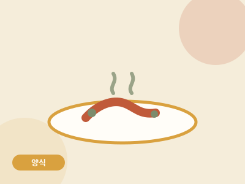

양식 · 25분 · 난이도 하
원팬 크림파스타
면 삶는 냄비 따로 없이, 팬 하나로 끝내는 크림파스타. 설거지는 팬 하나.

- 조리 시간
- 25분
- 난이도
- 하
- 분량
- 1인분
- 필요 화구
- 1구 인덕션
만드는 법
- 베이컨과 마늘 볶기팬에 베이컨과 다진 마늘을 넣고 중불에서 2분 볶아 기름을 냅니다. 별도의 오일이 없어도 베이컨 기름이면 충분합니다.
- 물과 면을 그대로물 400ml를 붓고 끓으면 면을 반으로 접어 넣습니다. 면 삶을 냄비가 따로 필요 없는 이유입니다. 중불에서 8분, 가끔 저어주세요.
- 우유와 치즈물이 거의 졸아들면 우유와 슬라이스 치즈를 넣고 저으면서 4~5분 더 끓입니다. 생크림 없이도 치즈가 농도를 만들어줍니다.
- 농도 조절주걱으로 바닥을 긁었을 때 자국이 1초 정도 남으면 완성입니다. 소금·후추로 간을 마무리하세요.
원룸쿡의 한 끗
생크림을 사면 남은 걸 버리게 되는 게 자취의 현실. 슬라이스 치즈 2장이 생크림 100ml의 역할을 정확히 대신합니다.
생크림을 사면 남은 걸 버리게 되는 게 자취의 현실. 슬라이스 치즈 2장이 생크림 100ml의 역할을 정확히 대신합니다.